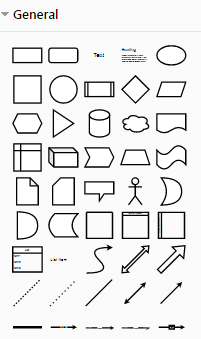
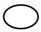
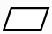
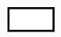
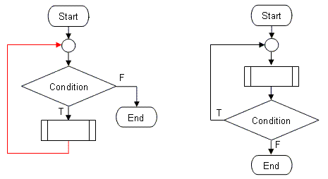

Cos'è Un Flow Chart?
un flow chart o diagramma di flusso è una tecnica usata dai programmatori per sviluppare un programma.
infatti coi diagrammi di flusso si rappresentano i "percorsi logici" che un programma ha il compito di svolgere, in modo
un flow chart è principalmente composto da una serie di blocchi e frecce che collegano gli stessi.
qui allegata vi è una foto del menu blocchi di https://app.diagrams.net/: un sito per creare i flow charts gratuitamente.

Vari tipi di Blocchi
Come dicevamo prima ogni blocco del flow chart ha una funzione specifica.
In breve:
- Blocco inizio/fine:

lo scopo del blocco inizio/fine è quello di dichiarare lo stato di avvio/fine del
nostro algoritmo. quetso blocco di solito è uno dei primi se non il primo da mettere nel nostro
diagramma di flusso.
-I/O: input o output:

il blocco input output serve a scrivere/visualizzare/modificare una variabile.
le variabili sarano poi molto importanti per il nostro diagramma.
-Blocco comandi:

Il blocco comandi viene usato per iserire i calcoli da fare,
ovvero le nostre "espressioni".
inoltre il bloco viene usato per definire e utilizzare un contatore, ovvero una variabile che viene incrementata
o decrementata per tenere il conto per esempio nella nostra ciclica.
Vari tipi di Funzioni
In oltre nei diagrammi di flusso vengono usate delle strutture "di base", molto utili al programmatore.
queste possono essere:
-Funzione Ciclica:

La funzione ciclica ha lo scopo di ripetere una condizione fino a chè questa non cambi.
esempio di un'esercizio con la funzione ciclica puo' essere tipo:"somma uno a una variabile fino a quando questa non arriva a 8"
in un diagramma del genere verrà quindi posizionato un blocco condizionale che chiede se il numero è maggiore o uguale a 8.
se il numero è più piccolo questo verrà incrementato di uno fino a chè non soddisferà i requisiti per rendere la richiesta "vera",
portando quindi alla fine del nostro esercizio.
spero che la spiegazione sia stata esaustiva,
Mattia Baroni.